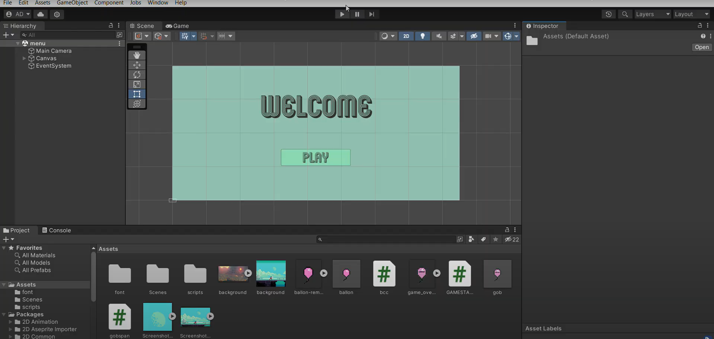

Projects
-
Ballon Popper Game
 This game made was made with unity and was one of my first projects in the college. The game contents were simple, a number of ballons were to be spawnned at an certain interwal along with few bombs. If one touches the ballon their score increaseas and if one touches the bomb then the game is over. The skills required for making this game were, Unity, C# and gamelogic.
-
Mini Piano
 This is a simple webpage that I made to practice my learnings in the topics of HTML, CSS and JavaScript. This websit contains a set of 10 buttons that are desined like piano keys. You can either play them by keyboard or click them with your mouse. Visit the website here
This is a simple webpage that I made to practice my learnings in the topics of HTML, CSS and JavaScript. This websit contains a set of 10 buttons that are desined like piano keys. You can either play them by keyboard or click them with your mouse. Visit the website here